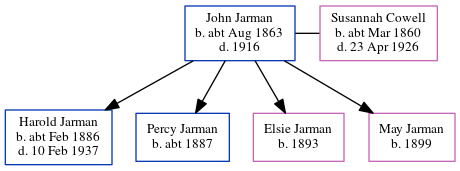

Harold Thomas Jarman cFeb 1886 - 1937
[ Home ] | [ Calendar ] | [ Surnames Index ] | [ Errors ] | [ Family History ]A stationer shop's assistant and the child of John Jarman (a bookstall manager) and Susannah Cowell (a housemaid), Harold Jarman, the third cousin twice-removed on the mother's side of Nigel Horne, was born in Streatham, London, England c. Feb 18861 and married Daisy Bance (a lcc clerk with whom he had 1 child, Gwendoline May) in Lewisham, London, England around May 19153.
During his life, he was living at Hambro Road in Streatham on 5 Apr 18915; at Penwortham Road, Wandsworth, London on 2 Apr 19116 - less than a mile from his third cousin on his mother's side Lilly Cowell who was living at 100 Elmbourne Road, Wandsworth, London; and at Lambton Road, Wimbledon, London in 19164.
He died on 10 Feb 1937 in Surrey, England2.
Parents
- John Isaac was born c. Aug 1863
- Susannah Elizabeth was born c. Mar 1860
Children
- Gwendoline May was born on 13 Jan 1916
Citations
- England & Wales births 1837-2006 - Findmypast
- England & Wales deaths 1837-2007 - Findmypast
- England & Wales Marriages 1837-2005 - Findmypast
- From daughter Gwendoline's baptism record
- 1891 England, Wales & Scotland Census - Findmypast (was age 5 and the son of the head of the household)
- 1911 Census for England & Wales - Findmypast (was age 25 and the son of the head of the household)
Media
England & Wales births 1837-2006 - BMD/B/1886/1/AZ/000314/150
England & Wales deaths 1837-2007 - BMD/D/1937/1/AZ/000633/030
Surrey Recruitment Registers 1908-1933 Transcription - GBM-SURREG-00026097
England & Wales marriages 1837-2008 - BMD/M/1915/2/AZ/000739/037
1891 England, Wales & Scotland Census - GBC/1891/0003863551
Family Tree
Map
Generated by ged2site. Last updated on Jul 3, 2024
Known Issues
Census information missing between Census UK 1891 and 1911 Census for England & Wales - Findmypast